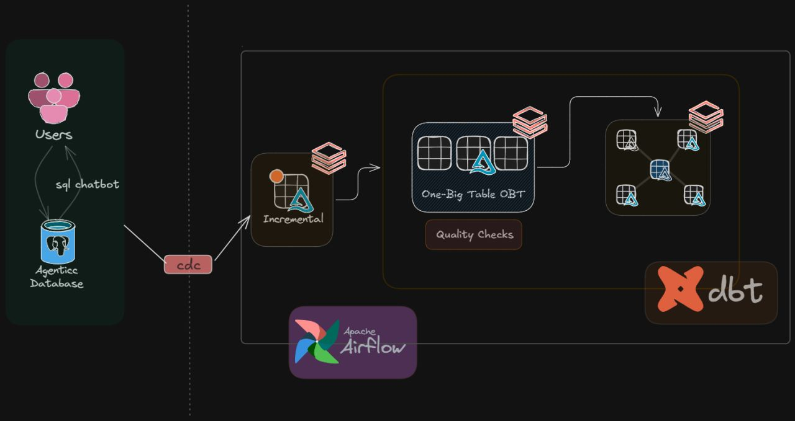
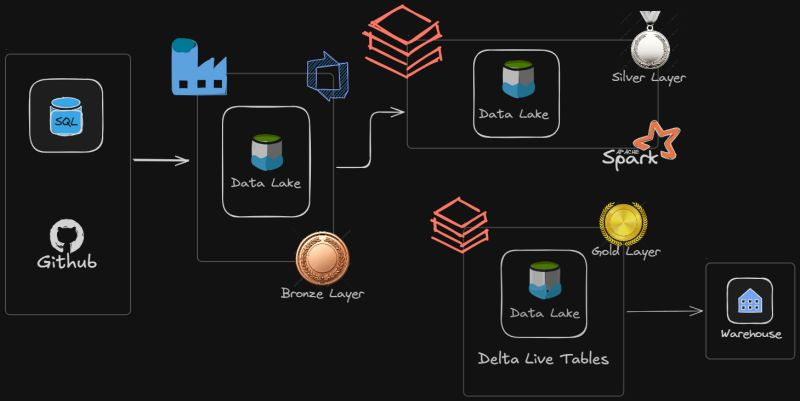

Hello, my name is
Shrutam Macwan.
Data Engineer | Architecting Lakehouses
About Me
I am a Data Engineer based in Niagara Falls, Ontario, specializing in designing, building, and optimizing scalable data pipelines and robust Medallion architectures. I bridge the gap between continuous live transactions and reliable analytical reporting to drive data-informed decision-making in cloud environments.
Technical Stack
Featured Projects

Retail Analytics Lakehouse
View Source- Eliminated source system strain by implementing Change Data Capture (CDC) to extract live transactional data from a serverless PostgreSQL DB without impacting production performance
- Reduced compute overhead by designing a streamlined Medallion architecture in Databricks, utilizing dbt Ephemeral models and a One-Big-Table (OBT) strategy to bypass unnecessary materializations.
- Achieved precise historical tracking for omnichannel retail metrics by configuring Slowly Changing Dimensions (SCD Type 2) via dbt snapshots, ensuring zero loss of state changes.
- Prevented downstream data anomalies by engineering strict, automated data quality gates orchestrated directly within Apache Airflow DAGs.

Spotify Streaming Data Pipeline
View Source- Automated high-throughput ingestion by deploying Azure Data Factory and Databricks Auto Loader, replacing manual batch polling with event-driven file detection
- Achieved near real-time processing of continuous data streams by architecting a multi-hop Delta Lake pipeline using Spark Streaming and Delta Live Tables (DLT).
- Solved transformation scalability limitations by implementing Jinja2 metadata-driven templating, allowing the pipeline to dynamically apply cleansing logic across multiple tables without code duplication.
- Enforced strict data integrity by integrating DLT Expectations at the Silver layer, automatically dropping malformed records before they could reach downstream BI dashboards.
Experience
Software Developer
Jan 2024 - Sep 2024Infobloom Tech Solutions
Spearheaded development initiatives, designed optimized database schemas, and implemented backend architectures. Mentored junior developers and collaborated with cross-functional teams to deliver scalable software solutions that improved system performance and reliability.
Education
Master of Data Analytics
Apr 2026University of Niagara Falls Canada
Niagara Falls, Ontario, Canada
Focused on advanced data architecture, scalable pipeline engineering, distributed computing, and analytics.
Computer Engineering
June 2024Gujarat Technological University
Gujarat, India
Established foundational engineering, software development, and analytical knowledge critical for backend and data systems.